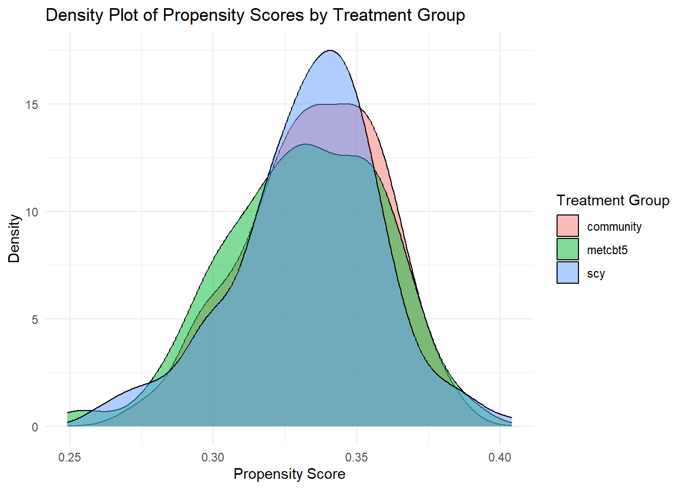
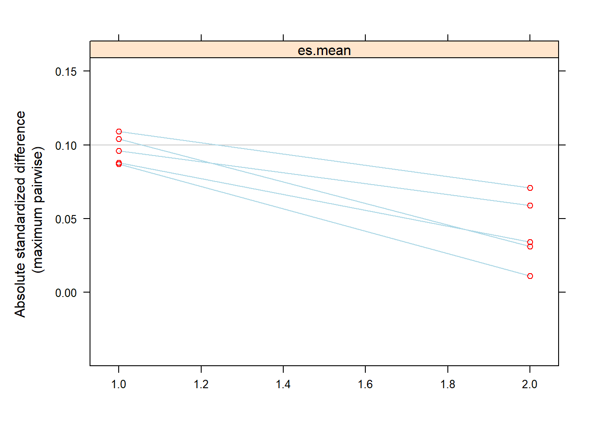
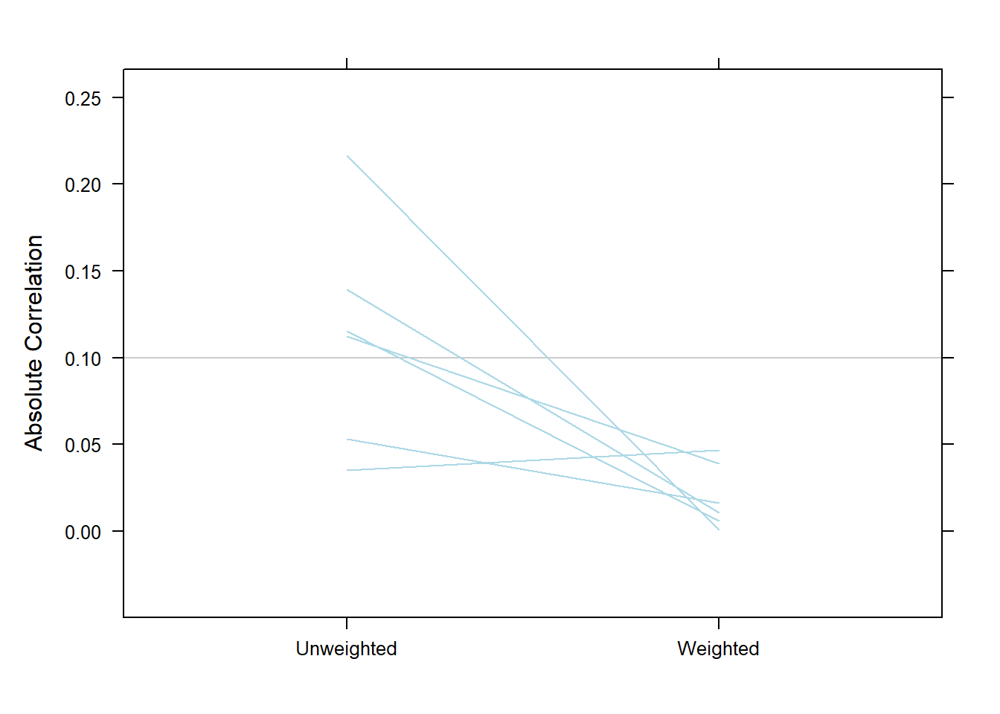

4 Extensions
4.1 Gradient Boosted Models
Gradient Boosted Models (GBM) are an ensemble technique used in machine learning. This is ensemble technique as combines multiple shallow decision trees (usually known to be weak learners) to create a more useful predictive model. It improves the overall model performance by iteratively adding these weak models that focus on correcting the errors of the previous models in the sequence. These models are very promising in a real-world data analysis scenario as they are can automatically incorporate nonlinear and interaction terms among the covariates.
Traditional logistic regression models require manual specification of interaction terms, which can be challenging and time-consuming, especially if there are many potential interactions to consider. TWANG package in R implements GBMs to estimate propensity scores can help overcome this challenge. GBMs can automatically capture interaction effects and non-linear relationships among covariates without the need for manual specification. This ability to model interactions without explicit intervention from the analyst makes GBMs an appealing choice for propensity score estimation in complex datasets with potential interactions.
4.2 Propensity score weighting
flowchart LR AA((propensity score weighting)) --> A[(Exposure modelling <br/>to estimate <br/>propensity scores)] AA --> B[(Converting propensity scores <br/>to <br/>inverse probability weights, <br/>or IPW)] AA --> C[(Assess balance <br/>and summary of IPW <br/>in the weighted data)] AA --> D[(Outcome <br/>modelling in <br/>the IPW weighted data)] style AA fill:#f9f,stroke:#333,stroke-width:4px
Average Treatment Effect (ATE)
\[\begin{align*} IPW_i &= \begin{cases} \frac{1}{\text{PS}_i} & \text{if individual } i \text{ is treated (} A_i = 1 \text{)} \\ \frac{1}{1 - \text{PS}_i} & \text{if individual } i \text{ is not treated (} A_i = 0 \text{)} \end{cases} \end{align*}\]Average Treatment Effect on the Treated (ATT)
\[\begin{align*} IPW_i &= \begin{cases} 1 & \text{if individual } i \text{ is treated (} A_i = 1 \text{)} \\ \frac{\text{PS}_i}{1 - \text{PS}_i} & \text{if individual } i \text{ is not treated (} A_i = 0 \text{)} \end{cases} \end{align*}\]4.3 Categorical exposure
4.3.1 Alcohol and Other Drug treatment data
require(twang)
data(AOD)
head(AOD)table(AOD$treat)
#>
#> community metcbt5 scy
#> 200 200 200Here,
- Outcome variable: suf12: substance use frequency at 12 month follow-up
- exposure variable: treat: possible values
- community: traditional programs (community)
- metcbt5: evidence-based MET/CBT-5 treatment protocol
- scy: Strengthening Communities for Youth
- Covariates (pre-treatment):
- illact: illicit activities scale
- crimjust: criminal justice involvement
- subprob: substance use problem scale
- subdep: substance use dependence scale
- white: non-Hispanic white youth
4.3.2 Step 1: Estimation of Propensity scores
We can fit vector generalized linear models (VGLMs) to fit propensity score model with our 3 category exposure variable:
require(VGAM)
psFormula <- "treat ~ illact + crimjust + subprob + subdep + white"
ps.model <- vglm(psFormula,family=multinomial, data=AOD)
AOD$ps <- data.frame(fitted(ps.model))require(ggplot2)
ggplot(AOD, aes(x=ps[,1], fill=factor(treat))) +
geom_density(alpha=0.5) +
scale_fill_discrete(name="Treatment Group") +
labs(title="Density Plot of Propensity Scores by Treatment Group",
x="Propensity Score",
y="Density") +
theme_minimal()
4.3.3 Step 1: Estimation of Propensity scores via GBM
set.seed(1235)
mnps.AOD.ATT <- mnps(treat ~ illact + crimjust + subprob + subdep + white,
data = AOD,
interaction.depth = 3,
estimand = "ATT",
treatATT = "community", # the treated
verbose = FALSE,
stop.method = "es.mean",
n.trees = 1000)4.3.4 Step 2: IPW calculation for ATT
AOD$w.ATT <- twang::get.weights(mnps.AOD.ATT, stop.method = "es.mean")
summary(AOD$w.ATT)
#> Min. 1st Qu. Median Mean 3rd Qu. Max.
#> 0.1494 0.7265 1.0000 0.8896 1.0000 1.8823
by(AOD$w.ATT, AOD$treat, summary)
#> AOD$treat: community
#> Min. 1st Qu. Median Mean 3rd Qu. Max.
#> 1 1 1 1 1 1
#> ------------------------------------------------------------
#> AOD$treat: metcbt5
#> Min. 1st Qu. Median Mean 3rd Qu. Max.
#> 0.1494 0.4939 0.7204 0.7529 0.9460 1.8386
#> ------------------------------------------------------------
#> AOD$treat: scy
#> Min. 1st Qu. Median Mean 3rd Qu. Max.
#> 0.3548 0.7619 0.9630 0.9159 1.0263 1.88234.3.5 Step 3: Balance assessment in weighted data
twang::bal.table(mnps.AOD.ATT,
digits = 2,
collapse.to = "covariate")[,c("max.std.eff.sz",
"stop.method")]plot(mnps.AOD.ATT, plots = 3)
4.3.6 Step 4: Effect estimates from weighted outcome model
require(survey)
design.mnps.ATT <- svydesign(ids=~1, weights=~w.ATT, data=AOD)
fit <- svyglm(suf12 ~ treat, design = design.mnps.ATT)
require(Publish)
publish(fit, intercept = FALSE)
#> Variable Units Coefficient CI.95 p-value
#> treat community Ref
#> metcbt5 0.20 [-0.00;0.41] 0.05129
#> scy 0.08 [-0.11;0.27] 0.415034.4 Continuous exposure
require(twangContinuous)
set.seed(1235)
data(dat)
summary(dat$tss_0) # treatment
#> Min. 1st Qu. Median Mean 3rd Qu. Max.
#> 0.000 0.000 0.000 2.101 4.000 13.0004.4.1 Step 1: Estimation of Propensity scores via GBM
test.mod <- ps.cont(tss_0 ~ sfs8p_0 + sati_0 + sp_sm_0
+ recov_0 + subsgrps_n + treat,
data=dat,
n.trees = 500,
shrinkage = 0.01,
interaction.depth = 3,
verbose = FALSE)
twangContinuous::bal.table(test.mod, digits = 3)4.4.2 Step 2: IPW calculation for ATT
dat$wts <- twangContinuous::get.weights(test.mod)
summary(dat$wts)
#> Min. 1st Qu. Median Mean 3rd Qu. Max.
#> 0.04231 0.85715 0.90552 0.99339 1.05425 6.31356
by(dat$wts, dat$tss_0, summary)
#> dat$tss_0: 0
#> Min. 1st Qu. Median Mean 3rd Qu. Max.
#> 0.8552 0.8667 0.8956 0.9761 0.9388 6.3136
#> ------------------------------------------------------------
#> dat$tss_0: 0.100623880265075
#> Min. 1st Qu. Median Mean 3rd Qu. Max.
#> 0.861 0.861 0.861 0.861 0.861 0.861
#> ------------------------------------------------------------
#> dat$tss_0: 0.198553075924
#> Min. 1st Qu. Median Mean 3rd Qu. Max.
#> 0.9018 1.0325 1.1632 1.0852 1.1769 1.1907
#> ------------------------------------------------------------
#> dat$tss_0: 0.881942079939801
#> Min. 1st Qu. Median Mean 3rd Qu. Max.
#> 1.146 1.146 1.146 1.146 1.146 1.146
#> ------------------------------------------------------------
#> dat$tss_0: 1
#> Min. 1st Qu. Median Mean 3rd Qu. Max.
#> 0.9006 0.9063 0.9164 0.9831 0.9750 1.9217
#> ------------------------------------------------------------
#> dat$tss_0: 1.15786092473523
#> Min. 1st Qu. Median Mean 3rd Qu. Max.
#> 0.9385 0.9385 0.9385 0.9385 0.9385 0.9385
#> ------------------------------------------------------------
#> dat$tss_0: 2
#> Min. 1st Qu. Median Mean 3rd Qu. Max.
#> 0.9425 0.9451 0.9525 0.9652 0.9591 1.1788
#> ------------------------------------------------------------
#> dat$tss_0: 2.31413199242876
#> Min. 1st Qu. Median Mean 3rd Qu. Max.
#> 0.9428 0.9489 0.9550 0.9550 0.9611 0.9672
#> ------------------------------------------------------------
#> dat$tss_0: 2.32625317004906
#> Min. 1st Qu. Median Mean 3rd Qu. Max.
#> 1.019 1.019 1.019 1.019 1.019 1.019
#> ------------------------------------------------------------
#> dat$tss_0: 2.99706024709897
#> Min. 1st Qu. Median Mean 3rd Qu. Max.
#> 0.9094 0.9094 0.9094 0.9094 0.9094 0.9094
#> ------------------------------------------------------------
#> dat$tss_0: 3
#> Min. 1st Qu. Median Mean 3rd Qu. Max.
#> 0.9092 0.9333 0.9819 0.9876 1.0123 1.9738
#> ------------------------------------------------------------
#> dat$tss_0: 3.45322259142172
#> Min. 1st Qu. Median Mean 3rd Qu. Max.
#> 0.9896 0.9896 0.9896 0.9896 0.9896 0.9896
#> ------------------------------------------------------------
#> dat$tss_0: 4
#> Min. 1st Qu. Median Mean 3rd Qu. Max.
#> 0.8014 0.8661 1.0279 0.9941 1.0838 1.1252
#> ------------------------------------------------------------
#> dat$tss_0: 5
#> Min. 1st Qu. Median Mean 3rd Qu. Max.
#> 0.6471 0.8081 1.0686 0.9874 1.1393 1.2394
#> ------------------------------------------------------------
#> dat$tss_0: 6
#> Min. 1st Qu. Median Mean 3rd Qu. Max.
#> 0.4869 0.7553 1.1391 1.0271 1.2909 1.3806
#> ------------------------------------------------------------
#> dat$tss_0: 7
#> Min. 1st Qu. Median Mean 3rd Qu. Max.
#> 0.3248 0.6921 1.0986 1.0161 1.2804 1.5554
#> ------------------------------------------------------------
#> dat$tss_0: 8
#> Min. 1st Qu. Median Mean 3rd Qu. Max.
#> 0.2159 0.5560 0.7457 0.9648 1.4072 1.7720
#> ------------------------------------------------------------
#> dat$tss_0: 9
#> Min. 1st Qu. Median Mean 3rd Qu. Max.
#> 0.1377 0.4927 1.1412 1.0919 1.5641 2.0416
#> ------------------------------------------------------------
#> dat$tss_0: 10
#> Min. 1st Qu. Median Mean 3rd Qu. Max.
#> 0.0957 0.4447 1.1916 1.1865 1.9366 2.3789
#> ------------------------------------------------------------
#> dat$tss_0: 11
#> Min. 1st Qu. Median Mean 3rd Qu. Max.
#> 0.07462 0.36352 0.88760 1.21486 1.98267 2.80320
#> ------------------------------------------------------------
#> dat$tss_0: 12
#> Min. 1st Qu. Median Mean 3rd Qu. Max.
#> 0.04231 0.42725 0.76566 1.17997 2.14189 3.28406
#> ------------------------------------------------------------
#> dat$tss_0: 13
#> Min. 1st Qu. Median Mean 3rd Qu. Max.
#> 0.04522 0.35156 0.40140 0.96447 0.98744 4.025824.4.3 Step 3: Balance assessment in weighted data
bal.table(test.mod, digits = 3)plot(test.mod, plots="es")
4.4.4 Step 4: Effect estimates from weighted outcome model
design.ps <- svydesign(ids=~1, weights=~wts, data=dat)
outcome.model <- svyglm(sfs8p_3 ~ tss_0, design = design.ps,
family = gaussian())
publish(outcome.model, intercept = FALSE, digits = 4)
#> Variable Units Coefficient CI.95 p-value
#> tss_0 0.0026 [-0.1197;0.1249] 0.96664.5 Multilevel modelling
Li, Zaslavsky, and Landrum (2013) showed that “exploiting the multilevel structure in at least one stage can greatly reduce the bias”. They emphasize that propensity score methods offer a more robust alternative to regression adjustment, especially in complex multilevel observational data where correctly specifying the outcome model may be challenging.